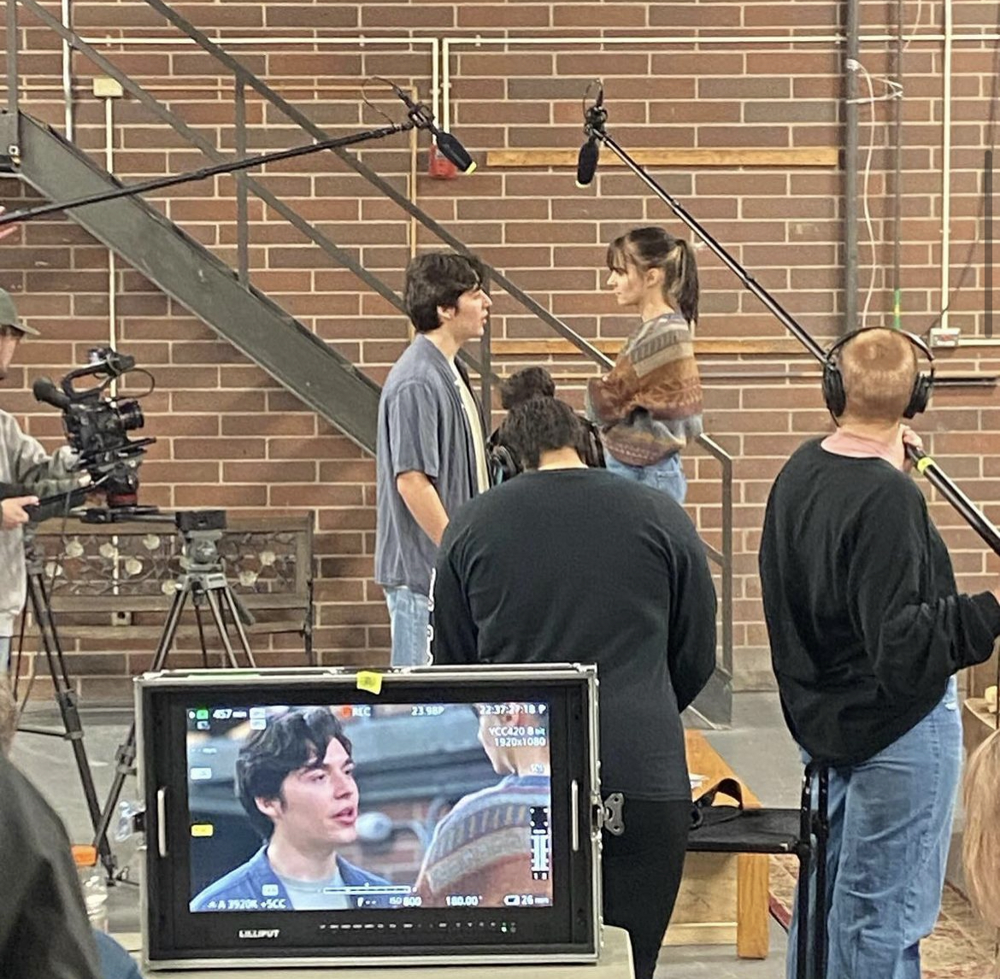
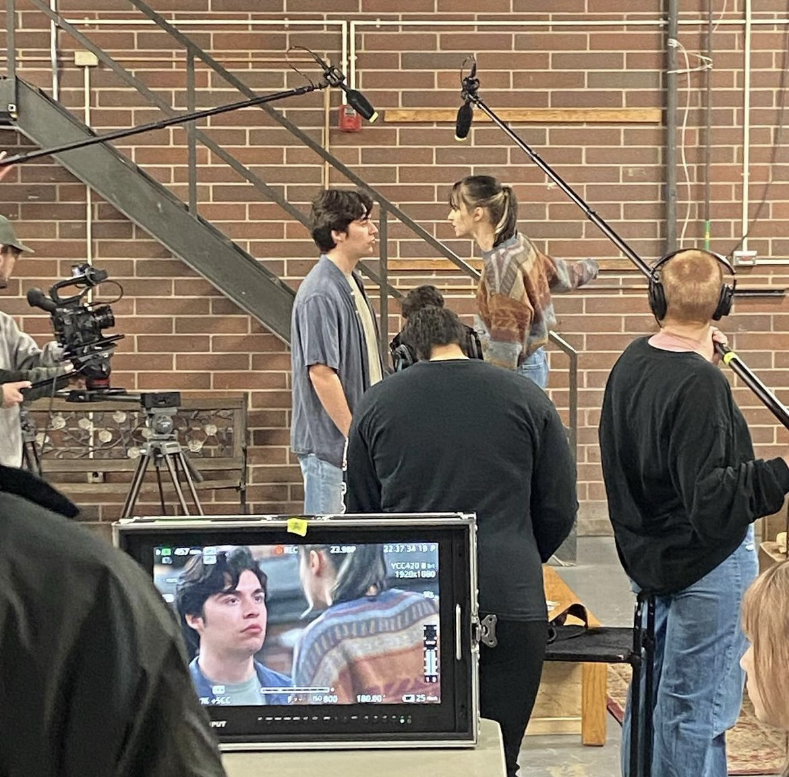
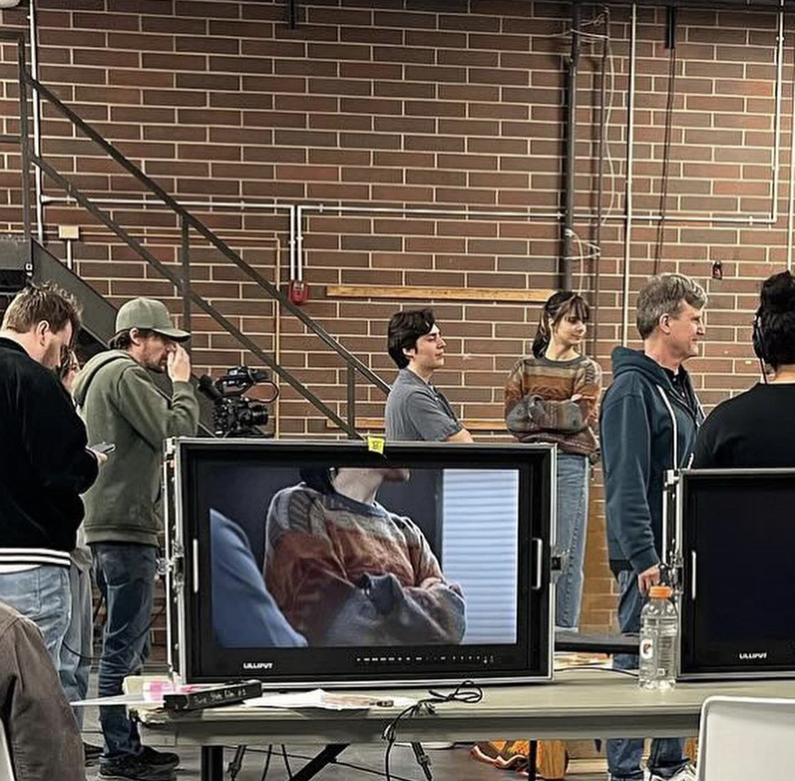
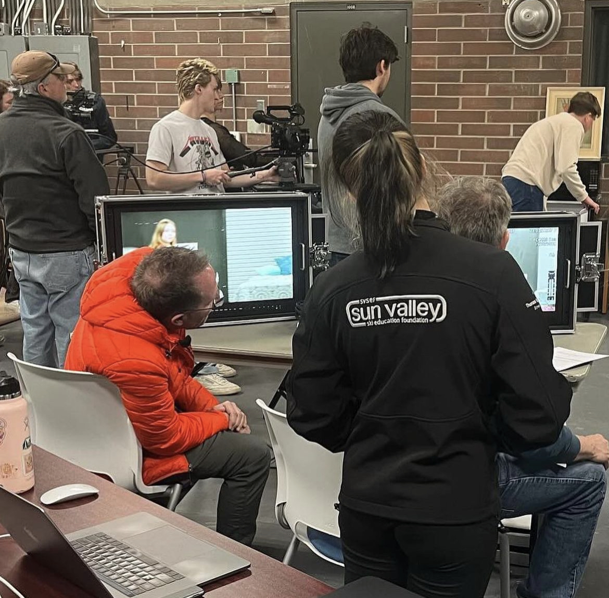
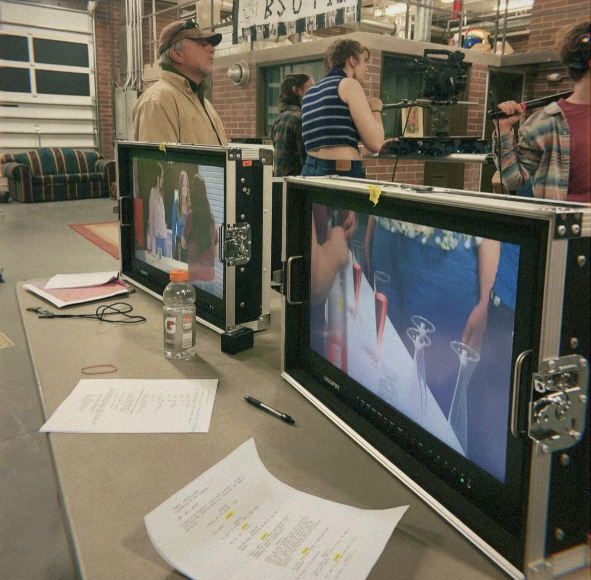
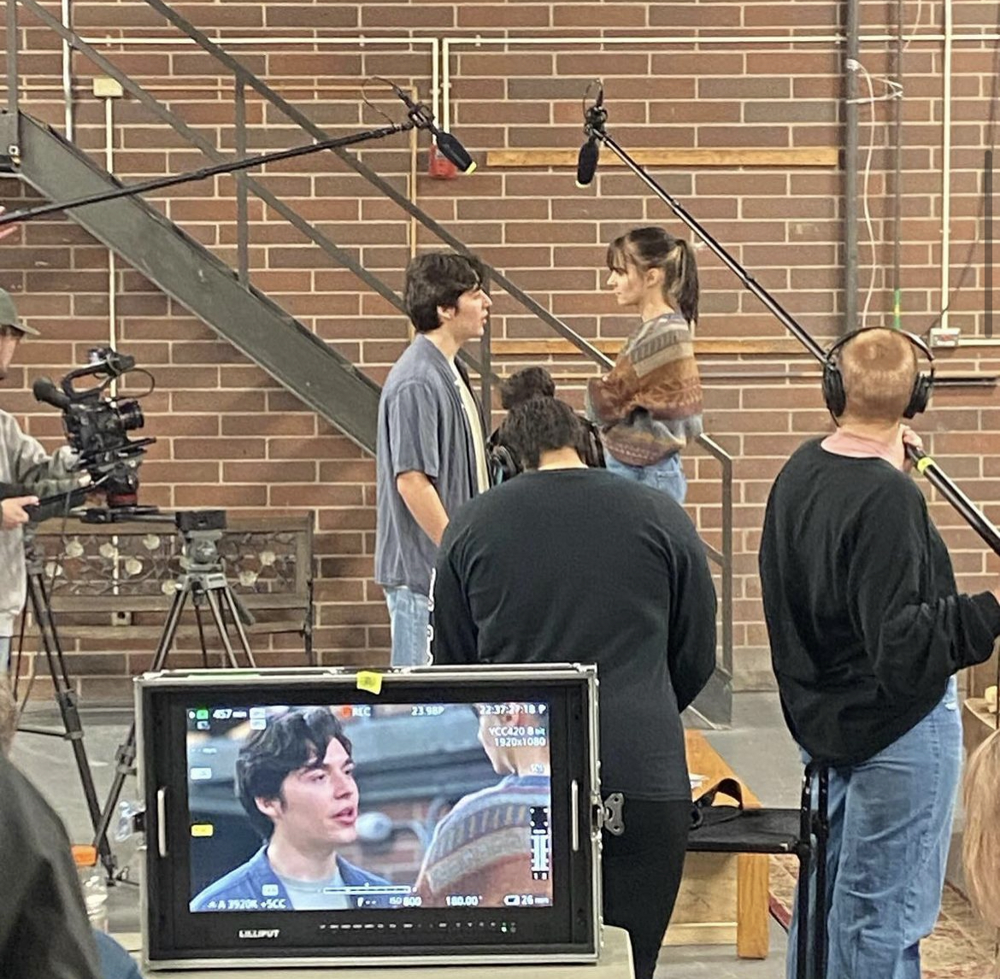
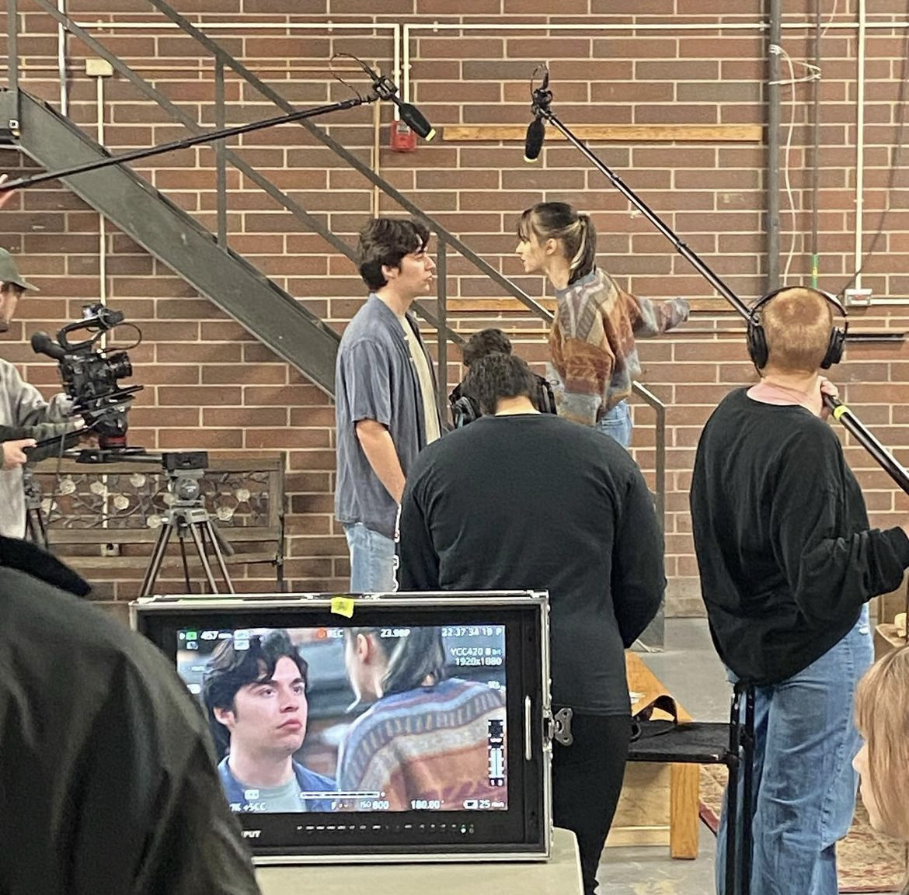
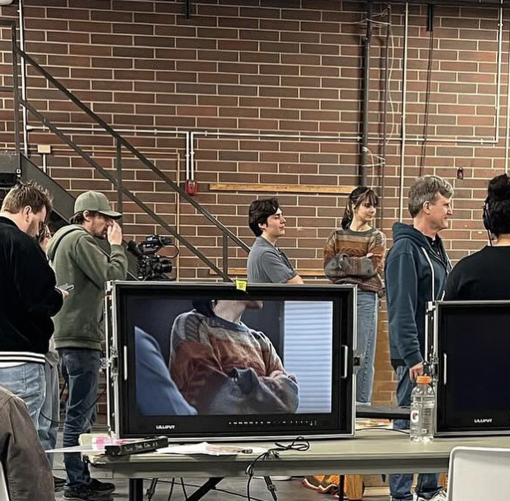
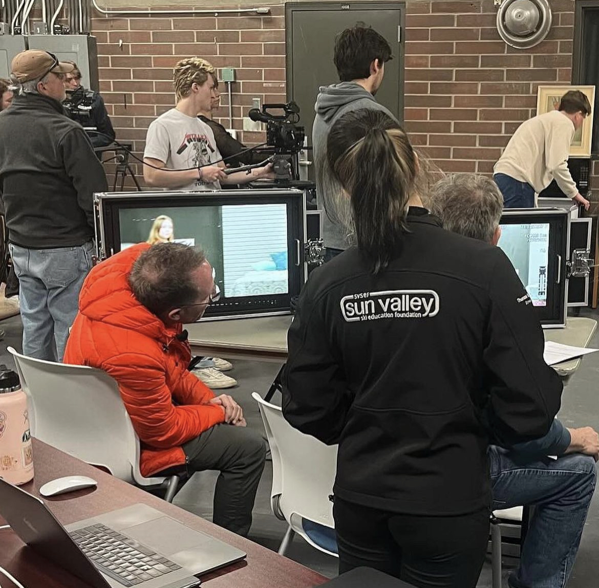
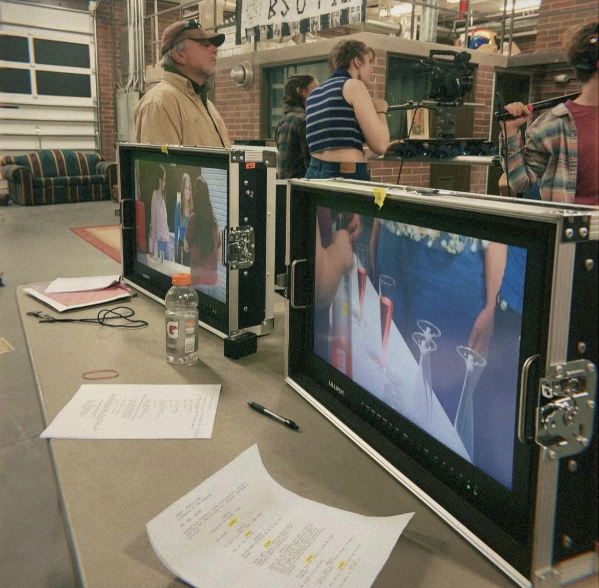

Scene From Silver Linings Playbook - Directed by Doug Campbell
Duration: March 9th 2024 - March 10th 2024
Description: In March 2024, I participated in a project within FILM 494: Workshop for - Acting and Directing for the Camera. As a member of the production team, we collaborated on crafting five scenes from various films under the direction of Doug Campbell. This immersive experience not only enhanced my comfort level within a collaborative work environment but also provided valuable insights into the process of conceptualizing, planning, and executing a film production.
This experience will undoubtedly enhance my future endeavors in game design and animation. The skills and insights gained from working on this film project, including collaboration, creative problem-solving, and attention to detail, will translate seamlessly into my future productions in the realms of game design and animation. Furthermore, my efforts as an actor and assistant director provided a better understanding of the intricacies of working with actors, including effectively communicating with actors, understanding their needs, and collaborating harmoniously to bring creative visions to life.
One of the scenes served as my personal project and I had the opportunity to act alongside my co-star, Jacob Cabral. This particular scene showcased my proficiency in video editing using Premiere Pro, and the hands-on experience allowed me to further develop my skills and gain practical knowledge in the realm of film production and editing.
Role:
Assistant to the Directors
Assistant to Set Director
Actor
Video Editor
Skills Used:
Film production process
Fast Workplace enviroment
Collaboration and teamwork
Lighting and sound techniques
Acting and directing techniques
Video editing and post-production
Tools/Technologies Used:
Film production equipment
Adobe Premiere Pro (for video editing)
Behind the Scenes Photo Album
 








